IPv6 Hitlist: Entropy clustering of responsive IPs
ICMP |
HTTP |
HTTPS |
DNS |
QUIC |
ANY
ICMP
/32-based full address fingerprint for ICMP
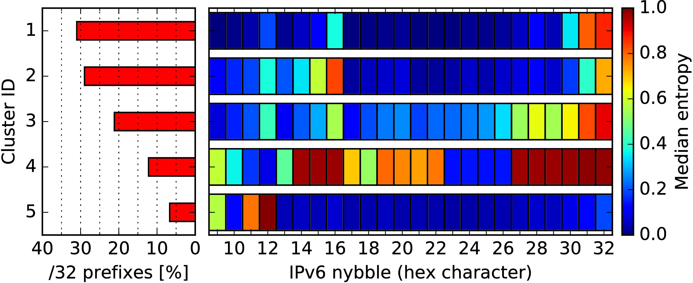
AS-based interface identifier fingerprint for ICMP
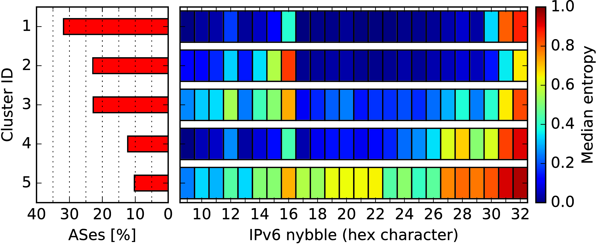
BGP-based network identifier fingerprint for ICMP
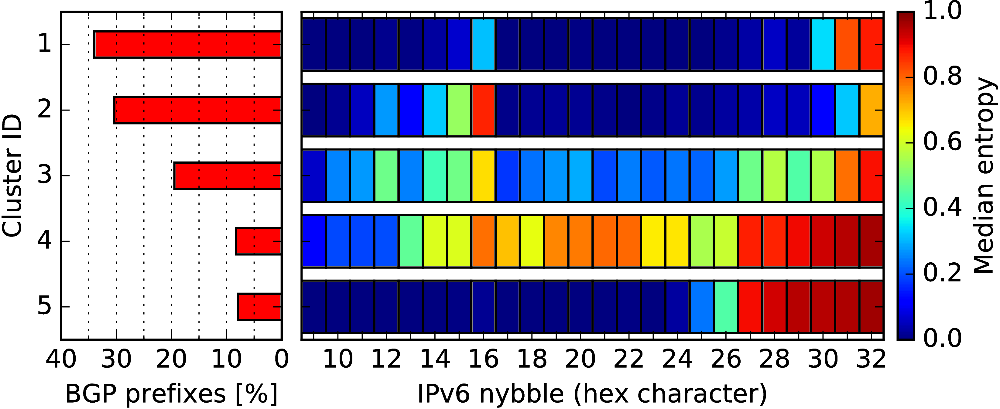
TCP/80 (HTTP)
/32-based full address fingerprint for TCP/80
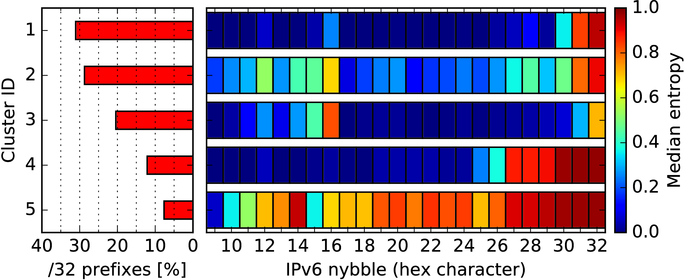
AS-based interface identifier fingerprint for TCP/80
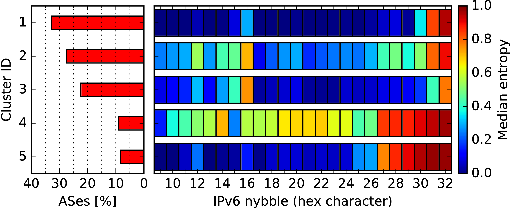
BGP-based network identifier fingerprint for TCP/80
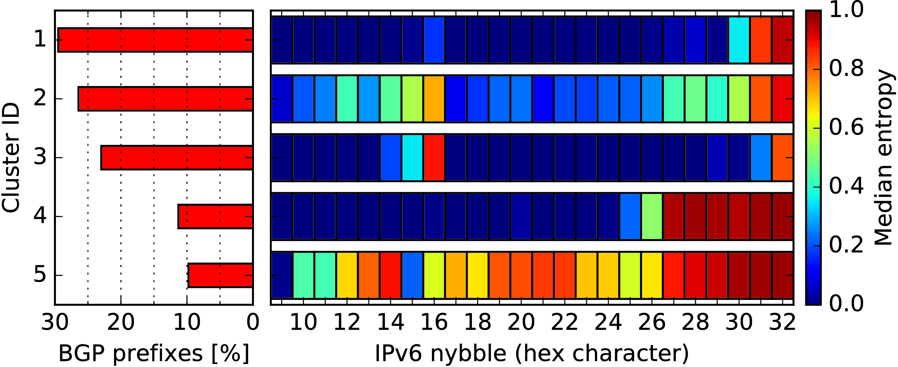
TCP/443 (HTTPS)
/32-based full address fingerprint for TCP/443
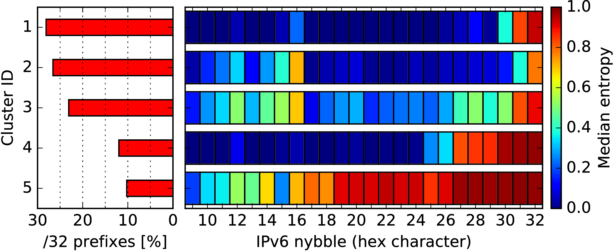
AS-based interface identifier fingerprint for TCP/443

BGP-based network identifier fingerprint for TCP/443
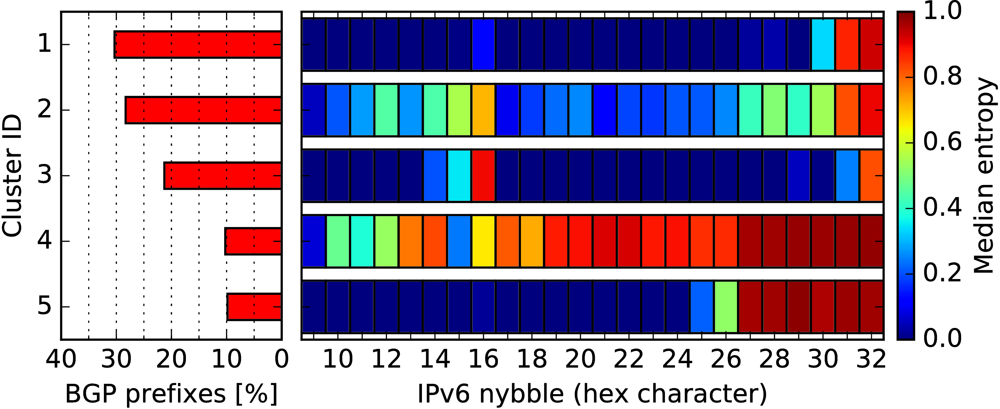
UDP/53 (DNS)
/32-based full address fingerprint for UDP/53
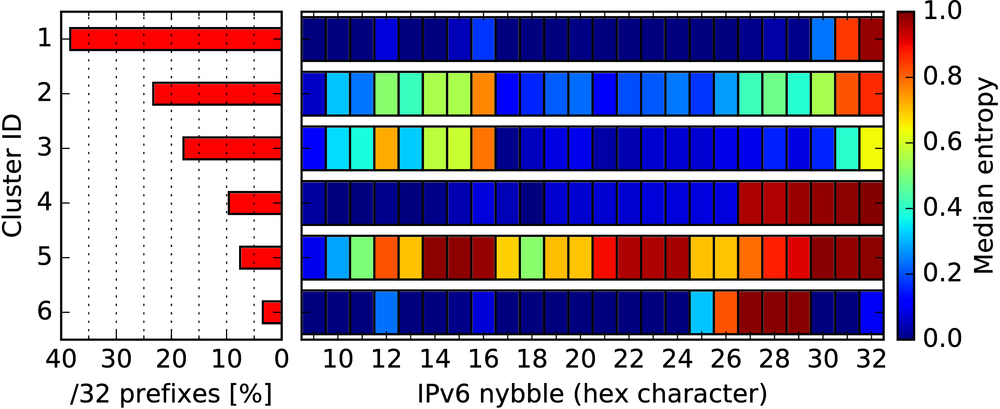
AS-based interface identifier fingerprint for UDP/53
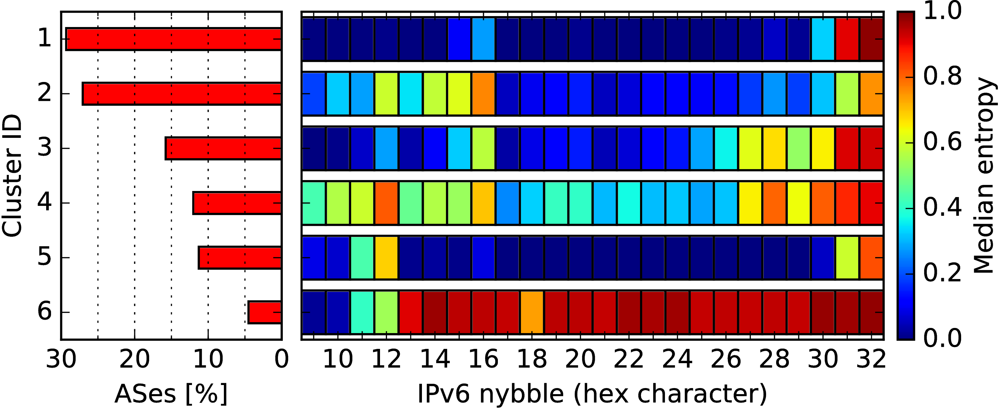
BGP-based network identifier fingerprint for UDP/53
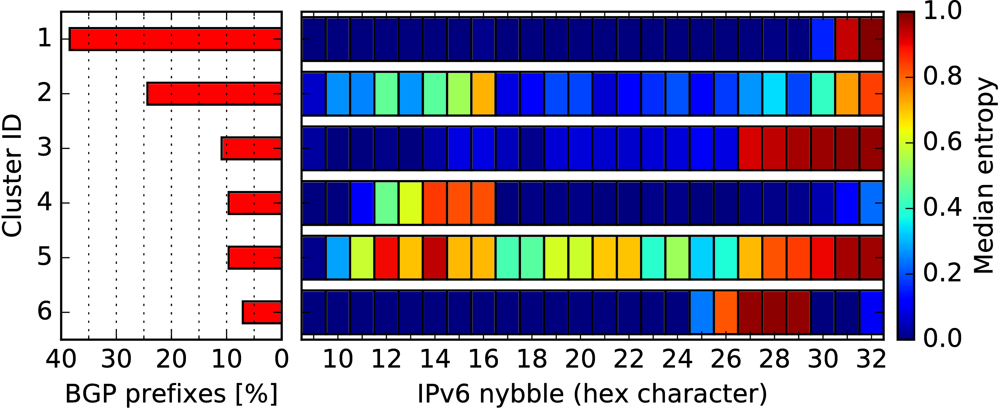
UDP/443 (QUIC)
/32-based full address fingerprint for UDP/443
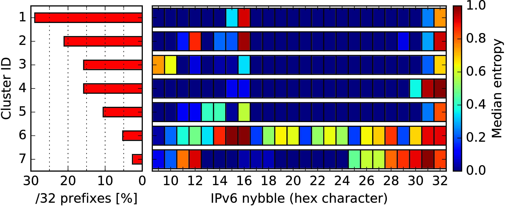
AS-based interface identifier fingerprint for UDP/443
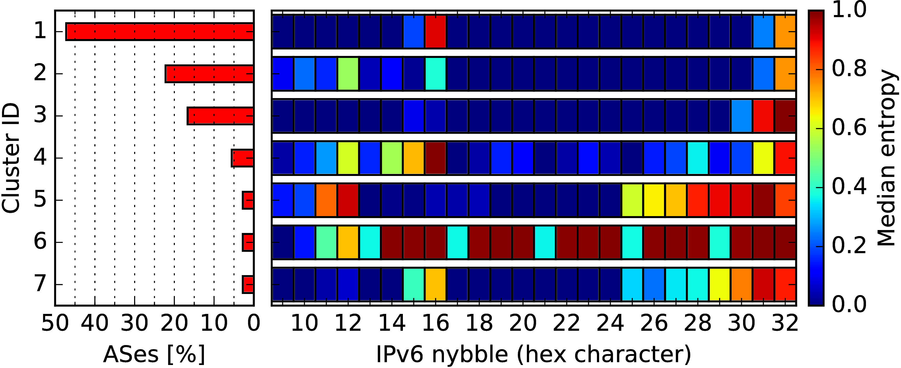
BGP-based network identifier fingerprint for UDP/443
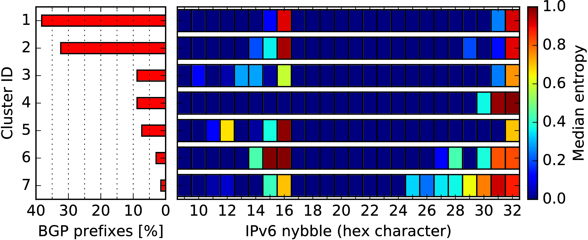
Any service (sum of all)
/32-based full address fingerprint for any service
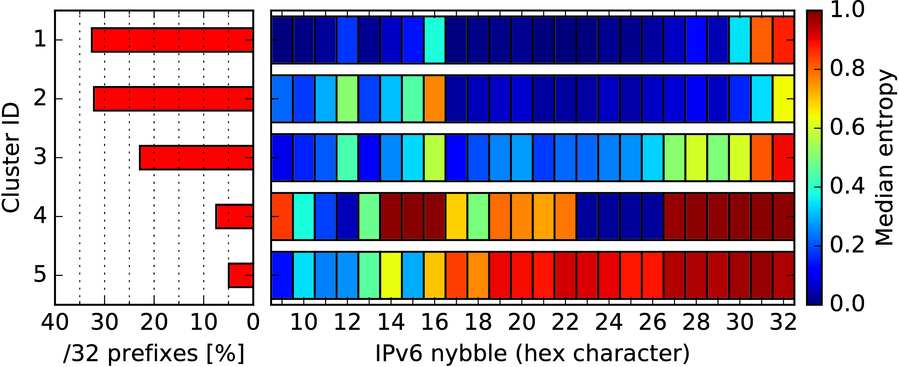
AS-based interface identifier fingerprint for any service
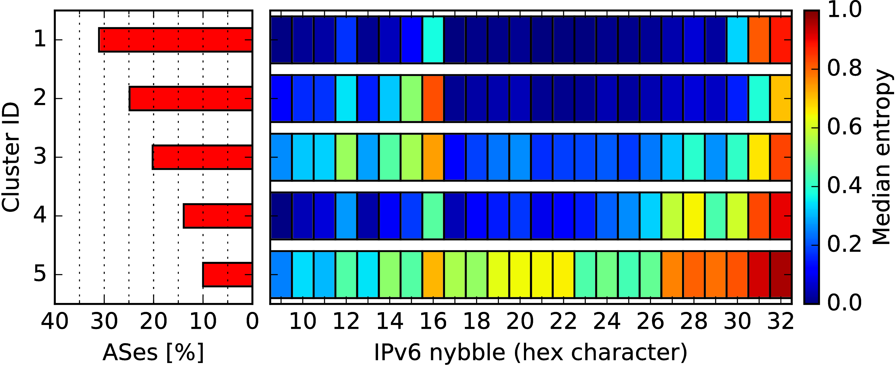
BGP-based network identifier fingerprint for any service
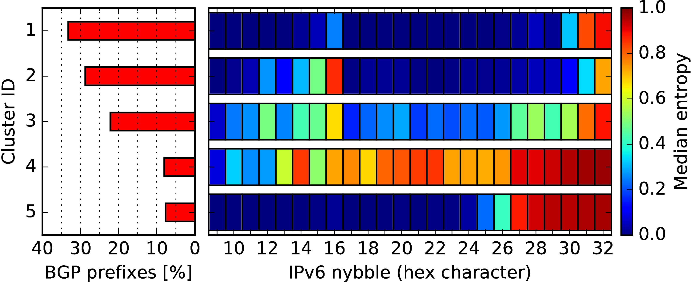